Fase 1 · Valkenburg
Waterafvoer waar de nood het hoogst is
Na juli 2021 weet iedereen wat extreme regen in het Geuldal doet. Een ondergrondse afvoer leidt piekwater onder het dorp door.
Regionale visie · Water · Energie · AI · Logistiek
Zuid-Limburg bereidt zich voor op de Einstein Telescope. Ons voorstel: wacht die jaren niet af, maar gebruik ze. Eerst Valkenburg beschermen tegen water, dan Parkstad verbinden onder de Brunssummerheide, en met die ervaring de telescoop bouwen. Daaromheen groeit een open plan voor energie, mijnwater, data en logistiek.
Het idee in het kort
De kracht zit niet in de losse projecten, maar in wat ze voor elkaar mogelijk maken.
Binnen vijftig kilometer komen Nederlandse, Belgische en Duitse kennisindustrie en logistiek samen. Dit plan koppelt wateropgave, bereikbaarheid, wetenschap, energie en rekenkracht in één volgorde, zodat warmte, water, data en materialen in de regio rondgaan en de deelprojecten elkaar versterken in plaats van om dezelfde euro te concurreren.
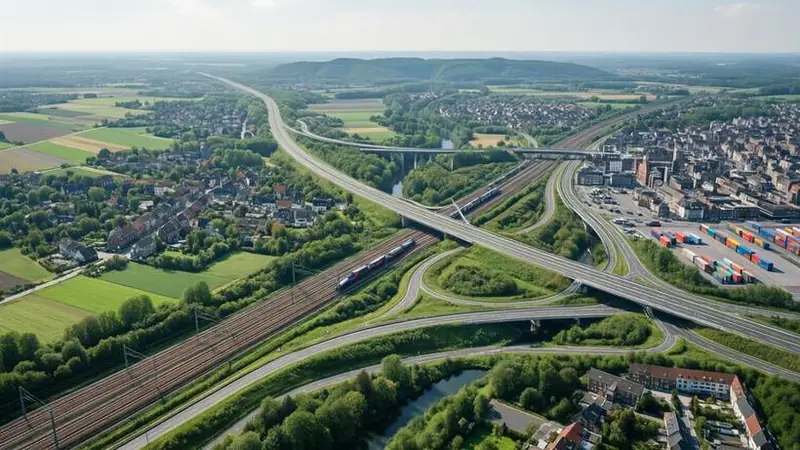
De route van de tunnelboormachine
Een tunnelboormachine kost tientallen miljoenen en staat meestal na één klus stil. Door haar drie keer achter elkaar in te zetten, bouwt de regio de kennis en de ploeg op die straks nodig zijn voor de Einstein Telescope.
Fase 1 · Valkenburg
Na juli 2021 weet iedereen wat extreme regen in het Geuldal doet. Een ondergrondse afvoer leidt piekwater onder het dorp door.
Fase 2 · Brunssummerheide
Twee tunnelbuizen halen doorgaand verkeer uit de wijken, met ruimte voor glasvezel, stroom en water.
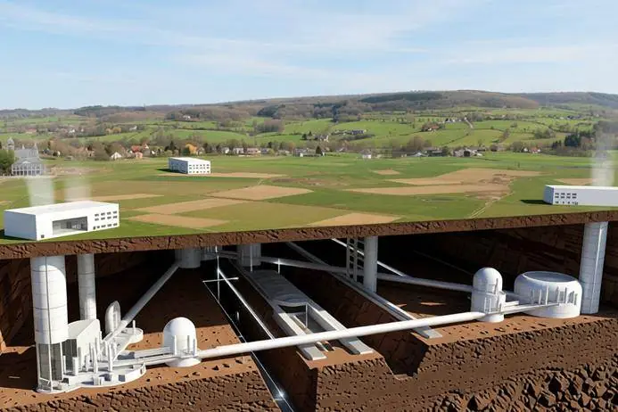
Fase 3 · Vaals
Als de bouw rond 2036 start, staat er een regio klaar met ondergrondse ervaring en een getrainde ploeg.
Levend concept · versie 1.1 · bijgewerkt 26 oktober 2026
Alle veertien deelscopes in beeld, elk met een status. Alles staat nog op idee, behalve de Einstein Telescope. Wie meedenkt, ziet zijn inbreng terug in de volgende versie.
Scope 01
IdeeOndergrondse afvoer in het Geuldal, eerste inzet van de tunnelboormachine
Scope 02
IdeeVerbinding Binnenring en Buitenring, met ruimte voor kabels en leidingen
Scope 03
OnderbouwdRegionale kennis en materieel klaar voor de bouw vanaf circa 2036
Scope 04
IdeeEnergiecentrale Limburg: zeven tot acht modulaire thoriumreactoren, met warmte door naar warmtenet, zoutopslag en Mijnwater
Scope 05
IdeeGroeit mee met de beschikbare stroom, restwarmte als product. Data-analyse voor de telescoop als eerste anker
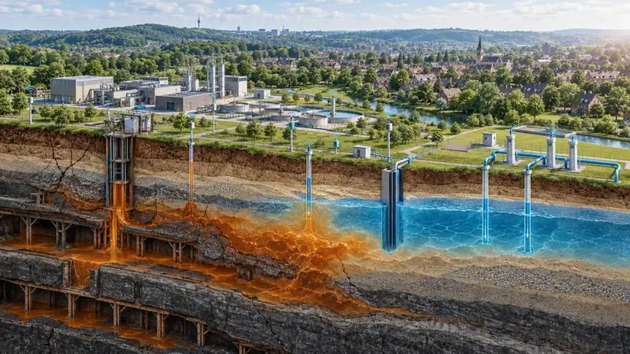
Scope 06
IdeeMeetnet, modelstudie en benutting van stijgend mijnwater
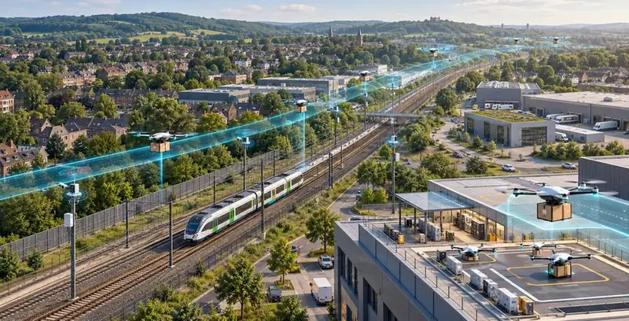
Scope 07
IdeeDronecorridor boven bestaand spoor, pallets per trein naar regionale hubs. Eerste horde: toestemming voor vliegen buiten zicht
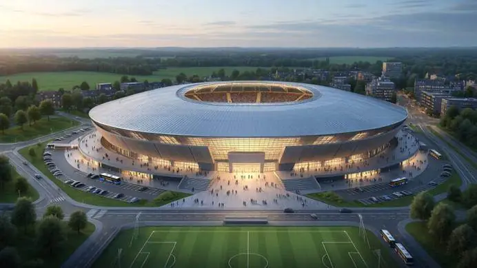
Scope 08
IdeeOverdekte locatie voor concerten, sport, beurzen en congressen, voor publiek uit drie landen
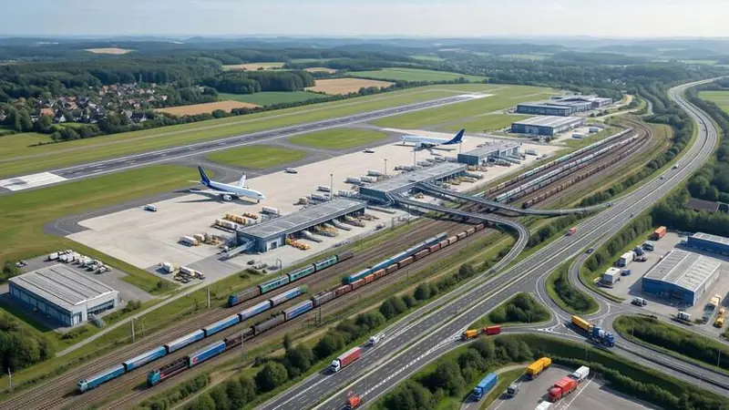
Scope 09
IdeeSpoor, weg en lucht als één grensoverschrijdend netwerk
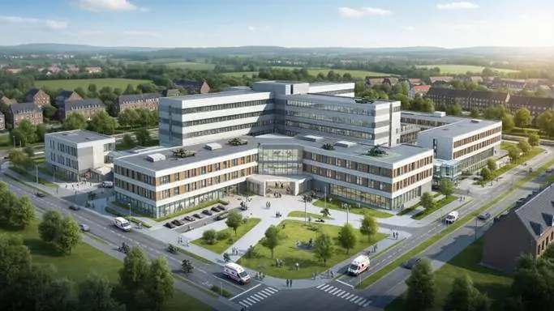
Scope 10
IdeeBestaande ziekenhuiscapaciteit koppelen aan defensie en de Euregio
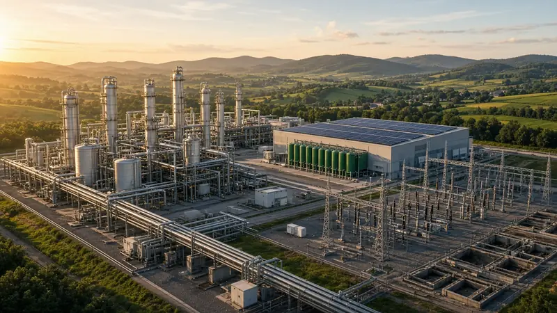
Scope 11
IdeeElektrificatie, waterstof en netverzwaring voor de grootste werkgever van de regio
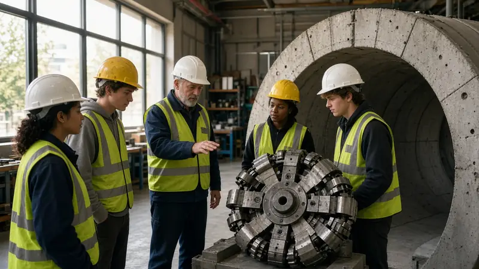
Scope 12
IdeeOpleidingsplaatsen in ondergrondse techniek, mbo-samenwerking en meetbare effecten per wijk
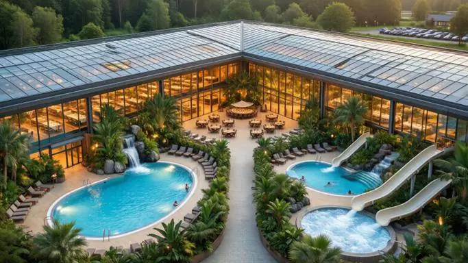
Scope 13
IdeeOverdekt bad dat het hele jaar open is, verwarmd met warmte die anders wordt weggekoeld
Scope 14
IdeeModulaire producten die regenwater bufferen en stroom opwekken, gemaakt in de regio zelf
Alle beelden bij de scopes zijn conceptvisualisaties: zo zou het eruit kunnen zien, niet hoe het al is.
Blijf bij
Scope energie
Enexis meldt in 2026 opnieuw knelpunten in Limburg en houdt klanten op de wachtlijstbron. Heerlen trekt zelf 1,2 mln euro uit tegen netcongestiebron. Daarom onderzoeken we modulaire thoriumreactoren van Copenhagen Atomics als eigen, regelbare bron. Als sluitstuk, niet als startpunt: eerst besparen, dan duurzaam opwekken, dan uitwisselen en opslaan, en pas daarna de restvraag invullen, zoals Parkstad het met PALET voor 2040 doetbron.
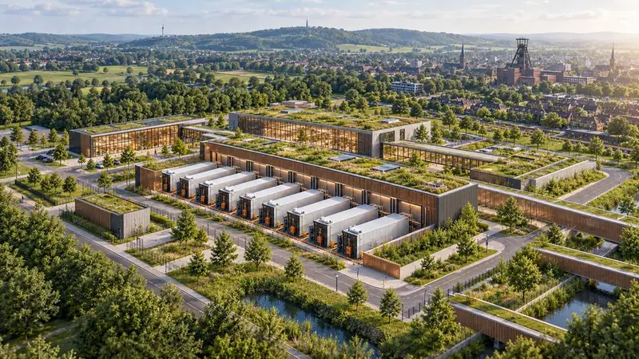
Scope mijnwater
Sinds de mijnen dicht zijn, stijgt het mijnwater onder Parkstad met ongeveer twee meter per jaar. Er resten nog enkele tientallen meters tot het bovenste grondwaterbron. Staatstoezicht op de Mijnen waarschuwt dat zout mijnwater in delen van de voormalige concessie Emma binnen decennia in de bovenliggende lagen kan komenbron.
Niet ongekend
Grote regionale projecten krijgen geld als Rijk, provincie, Europa en markt samen instappen.
| Project | Bedrag | Wie betaalde | Les voor dit plan |
|---|---|---|---|
| Waterveiligheid en Ruimte Limburg | € 1,2 mld | Rijk € 300 mln, regio € 300 mln, HWBP € 600 mln, Interreg | Directe haak voor Valkenburg |
| Einstein Telescope | € 912 mln | Nationaal Groeifonds: € 42 mln toegekend, € 870 mln gereserveerd | Het anker van dit plan |
| AI-fabriek Groningen | € 200 mln | EU € 70 mln, Rijk € 70 mln, regio € 60 mln | Model voor het AI- en datacluster |
| Mijnwater Heerlen | € 120 mln | Enexis € 80 mln, Limburgs Energie Fonds € 40 mln | Restwarmte werkt in deze regio |
| Ontwikkelimpuls Heerlen | € 6,2 mln | Gemeente Heerlen, 2027 tot 2030 | Geen subsidiepot maar capaciteit: bij een compleet principeverzoek binnen acht weken duidelijkheid |
| A2-tunnel Maastricht | € 220 mln | Rijk, provincie, Maastricht en Meerssen | Tunnel plus gebiedsontwikkeling levert meer op dan hij kost |
Bij de A2 is € 220 mln de door het CPB gemeten leefbaarheidswinst, niet de bouwsom. Stand oktober 2026. Ziet u een cijfer dat niet klopt, laat het weten.
Tijdlijn
MAAND 0 TOT 3
Cijfers met bronnen, eerste steunpartners.
MAAND 3 TOT 6
Waterschap, gemeenten, Brightlands, Mijnwater, netbeheerder.
MAAND 6 TOT 12
Per deelscope een kleine aanvraag, snel resultaat.
JAAR 1 TOT 2
Valkenburg en energie naar een volwaardige studie.
JAAR 2 TOT 4
Besluiten, financieringsmix, contract tunnelboormachine.
JAAR 4 TOT 6
Waterafvoer gebouwd, Brunssummerheide in voorbereiding.
De Einstein Telescope (bouwstart rond 2036) en de Energiecentrale Limburg hebben hun eigen klok en vallen buiten dit venster.
Wie
Een groep Zuid-Limburgse ondernemers met ervaring in energie, infrastructuur en internationaal projectmanagement. Het doel is een gedragen plan dat overheden en fondsen serieus kunnen beoordelen.
Doe mee
De snelste manier om mee te doen: laat uw e-mailadres achter en ontvang steeds de nieuwste versie van het plan.
Aanmelding ontvangen
Uw aanmelding is binnen. We nemen contact met u op over de volgende stappen. Dit is wat u ons heeft gestuurd:
Vragen
Nee. Dit is een conceptvisie. Locaties, beelden en claims zijn indicatief. Daarom zoeken we nu partners die het plan scherper en haalbaarder maken.
Een steunbetuiging kost niets. Consortiumpartners spreken per aanvraag af wat zij inbrengen, in uren, kennis of cofinanciering.
Nog niet. De techniek van Copenhagen Atomics is pre-commercieel: de eerste kettingreactie staat niet voor 2028 gepland. Wat nu wel kan, is de haalbaarheid onderzoeken, een offerte opvragen en de vergunningsroute in kaart brengen.
We gebruiken ze alleen voor dit initiatief: om u de nieuwste versie te sturen en contact met u op te nemen. U kunt dat op elk moment intrekken.